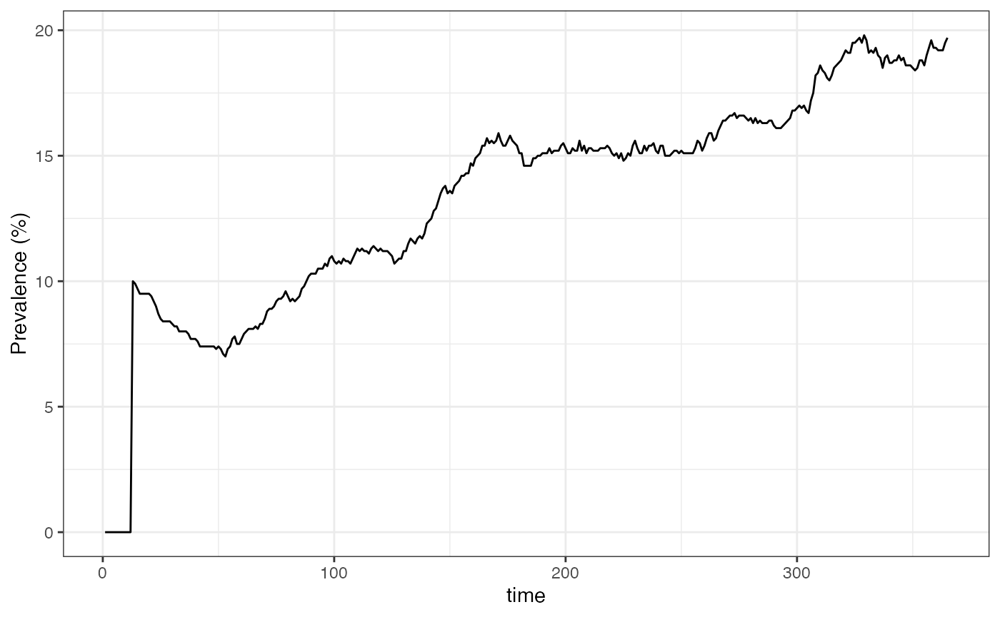
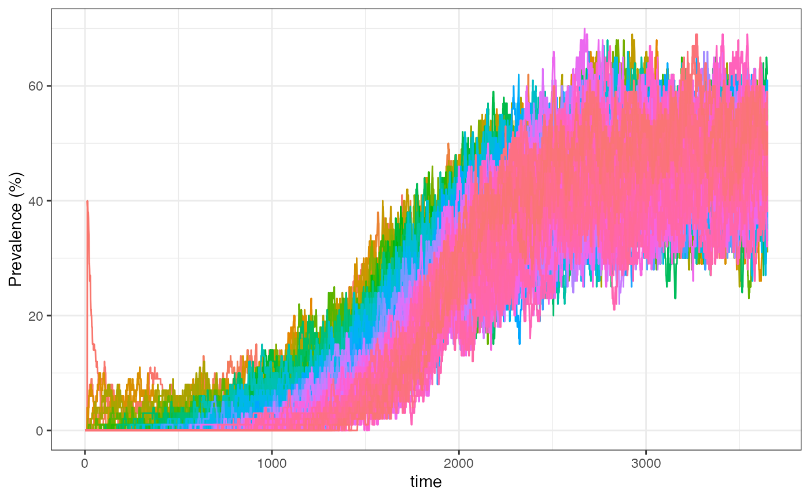
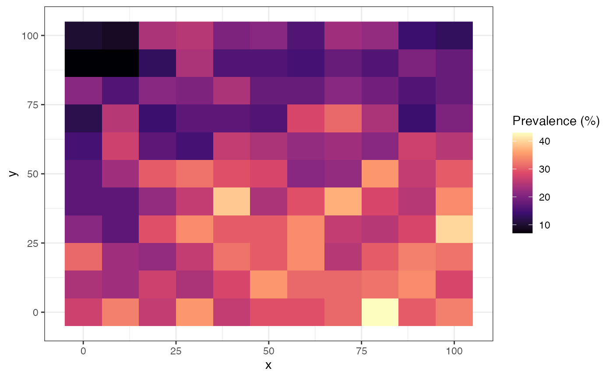
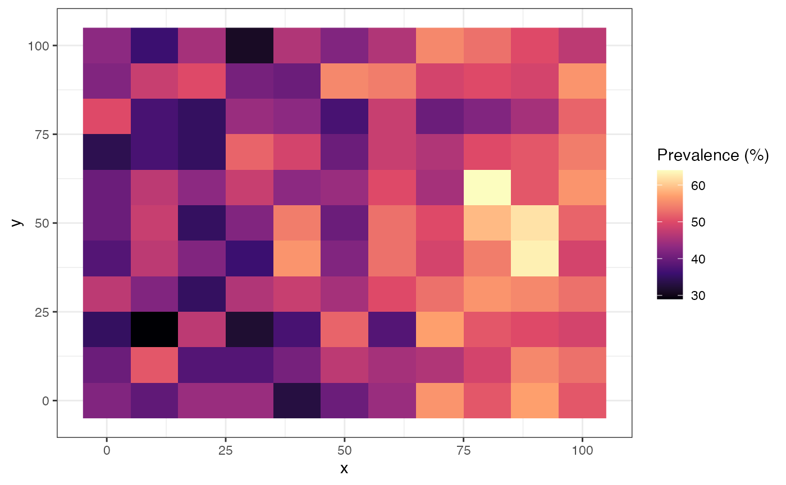
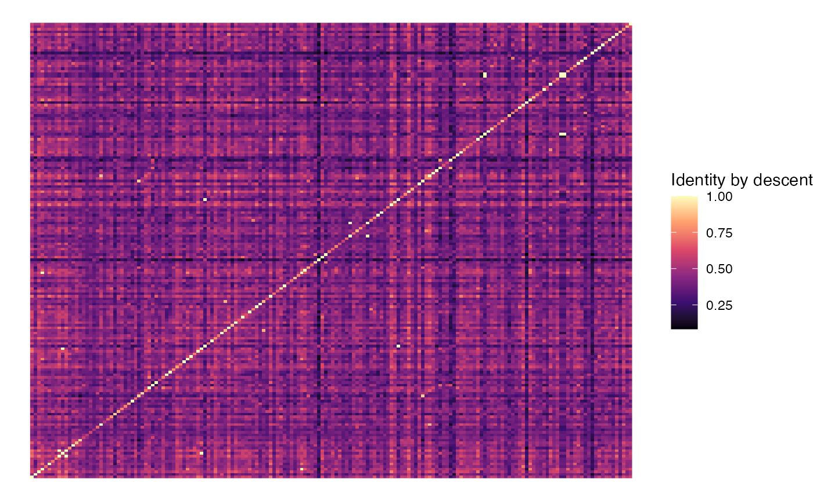
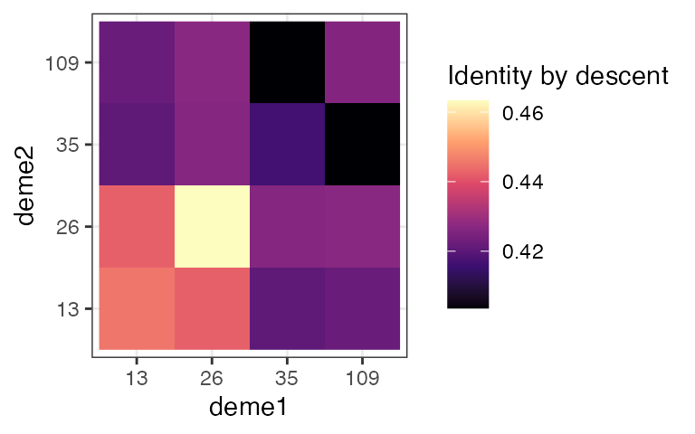
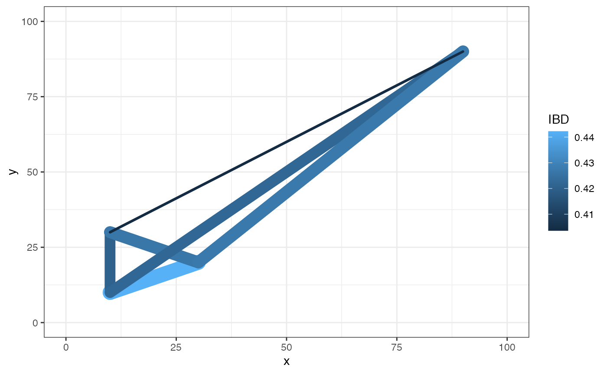

PlasmoSim returns two types of output:
For the latter, we need to define our desired sampling strategy using a data.frame. This specifies the demes that we will sample from, at what time points, and how many hosts will be drawn at random from the population:
# define individual-level sampling via a data.frame
sample_df <- data.frame(deme = 1,
time = 365,
n = 100)Now we run the main simulation function:
# run simulation
sim1 <- sim_falciparum(H = 1000, # human population size
M = 5000, # adult female mosquito population size
seed_infections = 100, # number of infected hosts at time 0
L = 24, # number of loci
sample_dataframe = sample_df # sampling data.frame
)
#> Running simulation
#>
#> simulation completed in 0.0289871 seconds
#> processing outputDaily output is stored in long format, which makes it easy to produce plots:
# basic plot of prevalence in "I" state (infected)
sim1$daily_values |>
ggplot() + theme_bw() +
geom_line(aes(x = time, y = 100 * I / 1000)) +
ylab("Prevalence (%)")
We can see that prevalence jumped to 10% (100 infected hosts in the population of 1000) on day 13. This is because we set the simulation going with 100 seed infections, which here means new liver-stage infections. The default time from liver-stage to blood-stage (the intrinsic incubation period) is set to by default, hence these all emerging together on day 13. After this point we can see dynamic and stochastic changes in the number infected.
Individual-level output is also returned in long format. We will use
the kable package to make this slightly easier to read:
# take a peek at basic individual-level output, without the haplotypes column
sim1$indlevel |>
kable() |>
kable_styling(bootstrap_options = c("striped", "hover", "condensed")) |>
scroll_box(width = "1000px", height = "400px")| time | deme | sample_ID | positive | haplotypes | haplo_ID |
|---|---|---|---|---|---|
| 365 | 1 | 7 | FALSE | NULL | NULL |
| 365 | 1 | 15 | FALSE | NULL | NULL |
| 365 | 1 | 31 | FALSE | NULL | NULL |
| 365 | 1 | 35 | FALSE | NULL | NULL |
| 365 | 1 | 54 | FALSE | NULL | NULL |
| 365 | 1 | 71 | FALSE | NULL | NULL |
| 365 | 1 | 81 | FALSE | NULL | NULL |
| 365 | 1 | 82 | FALSE | NULL | NULL |
| 365 | 1 | 89 | FALSE | NULL | NULL |
| 365 | 1 | 93 | TRUE | 81, 81, 81, 81, 81, 81, 81, 81, 81, 81, 81, 81, 81, 81, 81, 81, 81, 81, 81, 81, 81, 81, 81, 81 | 7bb9cce5c9911a60f4e7f1e827615768 |
| 365 | 1 | 95 | FALSE | NULL | NULL |
| 365 | 1 | 101 | FALSE | NULL | NULL |
| 365 | 1 | 106 | FALSE | NULL | NULL |
| 365 | 1 | 113 | FALSE | NULL | NULL |
| 365 | 1 | 120 | TRUE | 39, 39, 39, 39, 39, 39, 39, 39, 39, 39, 39, 39, 39, 39, 39, 39, 39, 39, 39, 39, 39, 39, 39, 39 | 468815117ba482205c8aa5d5eca5d558 |
| 365 | 1 | 136 | FALSE | NULL | NULL |
| 365 | 1 | 142 | TRUE | 14, 14, 14, 14, 14, 14, 14, 14, 14, 14, 14, 14, 14, 14, 14, 14, 14, 14, 14, 14, 14, 14, 14, 14 | 5a04f475aaafb7d8d57fb74d15afdf98 |
| 365 | 1 | 159 | FALSE | NULL | NULL |
| 365 | 1 | 174 | FALSE | NULL | NULL |
| 365 | 1 | 176 | TRUE | 53, 53, 53, 53, 53, 53, 53, 53, 53, 53, 53, 53, 53, 53, 53, 53, 53, 53, 53, 53, 53, 53, 53, 53 | 0d05caa56fd36e9a1b89ec813cef6de7 |
| 365 | 1 | 183 | FALSE | NULL | NULL |
| 365 | 1 | 194 | TRUE | 17, 17, 17, 17, 17, 17, 17, 17, 17, 17, 17, 17, 17, 17, 17, 17, 17, 17, 17, 17, 17, 17, 17, 17 | a7ec324ac08f16ea346bc7d8a3c6d4bc |
| 365 | 1 | 196 | FALSE | NULL | NULL |
| 365 | 1 | 204 | FALSE | NULL | NULL |
| 365 | 1 | 227 | FALSE | NULL | NULL |
| 365 | 1 | 240 | FALSE | NULL | NULL |
| 365 | 1 | 263 | FALSE | NULL | NULL |
| 365 | 1 | 275 | FALSE | NULL | NULL |
| 365 | 1 | 284 | FALSE | NULL | NULL |
| 365 | 1 | 287 | TRUE | 21, 21, 21, 21, 21, 21, 21, 21, 21, 21, 21, 21, 21, 21, 21, 21, 21, 21, 21, 21, 21, 21, 21, 21 | 5eba0a09b0d61a2da0d5bd4fffc6516f |
| 365 | 1 | 288 | FALSE | NULL | NULL |
| 365 | 1 | 291 | FALSE | NULL | NULL |
| 365 | 1 | 350 | FALSE | NULL | NULL |
| 365 | 1 | 354 | FALSE | NULL | NULL |
| 365 | 1 | 356 | TRUE | 47, 47, 47, 47, 47, 47, 47, 47, 47, 47, 47, 47, 47, 47, 47, 47, 47, 47, 47, 47, 47, 47, 47, 47 | 1938d4f28086e6687ede6b64163e9e3d |
| 365 | 1 | 363 | FALSE | NULL | NULL |
| 365 | 1 | 374 | FALSE | NULL | NULL |
| 365 | 1 | 381 | FALSE | NULL | NULL |
| 365 | 1 | 390 | TRUE | 47, 89, 47, 89, 47, 89, 47, 89, 47, 89, 47, 89, 47, 89, 47, 89, 47, 89, 47, 89, 47, 89, 47, 89, 47, 89, 47, 89, 47, 89, 47, 89, 47, 89, 47, 89, 47, 89, 47, 89, 47, 89, 47, 89, 47, 89, 47, 89 | 1938d4f28086e6687ede6b64163e9e3d, 4c364f6f36b13c5e685e9a946b2c38c1 |
| 365 | 1 | 394 | TRUE | 68, 42, 42, 68, 68, 68, 42, 68, 68, 42, 42, 68, 68, 42, 42, 68, 68, 42, 42, 68, 68, 42, 42, 68, 42, 42, 42, 68, 42, 42, 42, 68, 42, 42, 42, 68, 68, 42, 42, 68, 68, 42, 42, 68, 68, 42, 42, 68, 68, 42, 42, 68, 68, 42, 42, 68, 68, 68, 42, 68, 42, 68, 42, 68, 42, 68, 68, 68, 68, 68, 68, 68, 68, 68, 68, 68, 68, 68, 68, 68, 68, 68, 68, 68, 68, 42, 68, 68, 68, 42, 68, 68, 68, 42, 68, 68 | 3a41ce4c33d3dd5808b4c225bfb16708, 2caecb59b554231a5158876dcfdda9c5, d0187d454d53dd08b30854f451e17134, 186af5c5ac9bf632066ea1c6433dac5d |
| 365 | 1 | 397 | FALSE | NULL | NULL |
| 365 | 1 | 400 | FALSE | NULL | NULL |
| 365 | 1 | 401 | FALSE | NULL | NULL |
| 365 | 1 | 412 | TRUE | 14, 14, 14, 14, 14, 14, 14, 14, 14, 14, 14, 14, 14, 14, 14, 14, 14, 14, 14, 14, 14, 14, 14, 14 | 5a04f475aaafb7d8d57fb74d15afdf98 |
| 365 | 1 | 414 | FALSE | NULL | NULL |
| 365 | 1 | 415 | FALSE | NULL | NULL |
| 365 | 1 | 417 | FALSE | NULL | NULL |
| 365 | 1 | 420 | FALSE | NULL | NULL |
| 365 | 1 | 424 | TRUE | 47, 47, 21, 47, 47, 21, 21, 47, 47, 21, 21, 47, 21, 21, 21, 47, 21, 21, 47, 47, 21, 21, 21, 47, 47, 21, 21, 47, 47, 21, 21, 47, 47, 21, 21, 47, 47, 21, 21, 47, 47, 21, 21, 47, 47, 21, 21, 21, 47, 21, 47, 21, 47, 21, 47, 21, 47, 21, 47, 47, 21, 21, 21, 47, 21, 21, 21, 47, 21, 21, 21, 47, 21, 47, 21, 21, 21, 47, 21, 21, 21, 47, 21, 21, 47, 47, 47, 21, 47, 47, 47, 21, 47, 47, 47, 47 | 67623df4fcabc563d1c6f770084b8404, cd8b80d9780e7baa568ae43a9e427fed, e1a6e7b41ade666e1208f821ff536cb3, e629f1bebe0b02832ecc3fe63f457242 |
| 365 | 1 | 430 | FALSE | NULL | NULL |
| 365 | 1 | 436 | FALSE | NULL | NULL |
| 365 | 1 | 438 | TRUE | 42, 68, 68, 42, 68, 68, 42, 68, 68, 42, 42, 42, 42, 42, 68, 68, 42, 68, 42, 42, 42, 42, 42, 42, 42, 42, 42, 42, 68, 42, 42, 42, 42, 42, 42, 42, 42, 42, 68, 42, 42, 68, 42, 68, 68, 42, 68, 68, 68, 68, 68, 68, 68, 68, 68, 68, 68, 68, 68, 68, 68, 68, 68, 68, 42, 68, 68, 42, 68, 68, 42, 68 | d50ccfeb495e6304eb2f50069f03decb, 946e804ff63228416dd65529939c9464, 3db0498dafecf7738dd73ec80d75089e |
| 365 | 1 | 451 | TRUE | 86, 86, 86, 86, 86, 86, 86, 86, 86, 86, 86, 86, 86, 86, 86, 86, 86, 86, 86, 86, 86, 86, 86, 86 | a3010796957ecae73d6f2f663164dc88 |
| 365 | 1 | 456 | FALSE | NULL | NULL |
| 365 | 1 | 457 | FALSE | NULL | NULL |
| 365 | 1 | 463 | FALSE | NULL | NULL |
| 365 | 1 | 473 | FALSE | NULL | NULL |
| 365 | 1 | 479 | FALSE | NULL | NULL |
| 365 | 1 | 480 | FALSE | NULL | NULL |
| 365 | 1 | 498 | FALSE | NULL | NULL |
| 365 | 1 | 517 | FALSE | NULL | NULL |
| 365 | 1 | 524 | FALSE | NULL | NULL |
| 365 | 1 | 538 | FALSE | NULL | NULL |
| 365 | 1 | 546 | TRUE | 89, 89, 89, 89, 89, 89, 89, 89, 89, 89, 89, 89, 89, 89, 89, 89, 89, 89, 89, 89, 89, 89, 89, 89 | 4c364f6f36b13c5e685e9a946b2c38c1 |
| 365 | 1 | 547 | FALSE | NULL | NULL |
| 365 | 1 | 549 | FALSE | NULL | NULL |
| 365 | 1 | 551 | TRUE | 14, 14, 14, 14, 14, 14, 14, 14, 14, 14, 14, 14, 14, 14, 14, 14, 14, 14, 14, 14, 14, 14, 14, 14 | 5a04f475aaafb7d8d57fb74d15afdf98 |
| 365 | 1 | 573 | FALSE | NULL | NULL |
| 365 | 1 | 587 | TRUE | 53, 53, 53, 53, 53, 53, 53, 53, 53, 53, 53, 53, 53, 53, 53, 53, 53, 53, 53, 53, 53, 53, 53, 53 | 0d05caa56fd36e9a1b89ec813cef6de7 |
| 365 | 1 | 590 | FALSE | NULL | NULL |
| 365 | 1 | 596 | FALSE | NULL | NULL |
| 365 | 1 | 641 | FALSE | NULL | NULL |
| 365 | 1 | 649 | FALSE | NULL | NULL |
| 365 | 1 | 652 | TRUE | 81, 81, 81, 81, 81, 81, 81, 81, 81, 81, 81, 81, 81, 81, 81, 81, 81, 81, 81, 81, 81, 81, 81, 81 | 7bb9cce5c9911a60f4e7f1e827615768 |
| 365 | 1 | 681 | TRUE | 87, 87, 87, 87, 87, 87, 87, 87, 87, 87, 87, 87, 87, 87, 87, 87, 87, 87, 87, 87, 87, 87, 87, 87 | 8ff6b39ffbb37ad530e1e02242acd424 |
| 365 | 1 | 688 | FALSE | NULL | NULL |
| 365 | 1 | 691 | TRUE | 55, 55, 55, 55, 55, 55, 55, 55, 55, 55, 55, 55, 55, 55, 55, 55, 55, 55, 55, 55, 55, 55, 55, 55 | 83cacee044af7e1edd2c042d6d837a1f |
| 365 | 1 | 703 | FALSE | NULL | NULL |
| 365 | 1 | 708 | FALSE | NULL | NULL |
| 365 | 1 | 726 | FALSE | NULL | NULL |
| 365 | 1 | 745 | FALSE | NULL | NULL |
| 365 | 1 | 754 | TRUE | 42, 42, 42, 42, 42, 42, 42, 42, 42, 42, 42, 42, 42, 42, 42, 42, 42, 42, 42, 42, 42, 42, 42, 42 | e582bccedae1a8c866136c0c59119502 |
| 365 | 1 | 781 | FALSE | NULL | NULL |
| 365 | 1 | 785 | FALSE | NULL | NULL |
| 365 | 1 | 811 | FALSE | NULL | NULL |
| 365 | 1 | 818 | FALSE | NULL | NULL |
| 365 | 1 | 830 | FALSE | NULL | NULL |
| 365 | 1 | 844 | TRUE | 88, 88, 88, 88, 88, 88, 88, 88, 88, 88, 88, 88, 88, 88, 88, 88, 88, 88, 88, 88, 88, 88, 88, 88, 88, 88, 88, 88, 88, 88, 88, 88, 88, 88, 88, 64, 88, 64, 88, 64, 88, 64, 88, 64, 88, 88, 88, 88 | 195c30a32df1dd776b6aa4a20bc2f924, 0ce52b07bc461926e17172e8f37ab893 |
| 365 | 1 | 866 | FALSE | NULL | NULL |
| 365 | 1 | 872 | TRUE | 85, 85, 85, 85, 85, 85, 85, 85, 85, 85, 85, 85, 85, 85, 85, 85, 85, 85, 85, 85, 85, 85, 85, 85 | d9fc74b6c8e22d6169af05082e17798d |
| 365 | 1 | 886 | FALSE | NULL | NULL |
| 365 | 1 | 897 | TRUE | 64, 64, 64, 64, 64, 64, 64, 64, 64, 64, 64, 64, 64, 64, 64, 64, 64, 64, 64, 64, 64, 64, 64, 64 | 14e7f028287c07ea9e875126193d6aca |
| 365 | 1 | 911 | FALSE | NULL | NULL |
| 365 | 1 | 931 | FALSE | NULL | NULL |
| 365 | 1 | 947 | FALSE | NULL | NULL |
| 365 | 1 | 959 | FALSE | NULL | NULL |
| 365 | 1 | 961 | FALSE | NULL | NULL |
| 365 | 1 | 963 | FALSE | NULL | NULL |
| 365 | 1 | 973 | FALSE | NULL | NULL |
| 365 | 1 | 986 | FALSE | NULL | NULL |
The first few columns tell us when and where (i.e. which deme)
sampling occurred, the ID of the host, and whether they were positive
for malaria parasites. The next two columns give genetic data (positive
samples only). The haplotypes column gives the raw
information at all 24 loci. Note that each host can be infected with
multiple strains, meaning this element is actually a matrix with one row
for each strain and one column for each locus. We can see this by
printing out the full element for a malaria-positive host:
# print raw genetic data
sim1$indlevel |>
filter(sample_ID == 394) |>
pull(haplotypes)
#> [[1]]
#> [,1] [,2] [,3] [,4] [,5] [,6] [,7] [,8] [,9] [,10] [,11] [,12] [,13] [,14]
#> [1,] 68 68 68 68 68 68 42 42 42 68 68 68 68 68
#> [2,] 42 68 42 42 42 42 42 42 42 42 42 42 42 42
#> [3,] 42 42 42 42 42 42 42 42 42 42 42 42 42 42
#> [4,] 68 68 68 68 68 68 68 68 68 68 68 68 68 68
#> [,15] [,16] [,17] [,18] [,19] [,20] [,21] [,22] [,23] [,24]
#> [1,] 68 42 42 68 68 68 68 68 68 68
#> [2,] 68 68 68 68 68 68 68 42 42 42
#> [3,] 42 42 68 68 68 68 68 68 68 68
#> [4,] 68 68 68 68 68 68 68 68 68 68Returning to the table, the final column gives the
haplo_ID. This is a hash of the information contained in
each row of the haplotypes matrix, meaning each unique
combination of values over all loci will be given a unique name. This
can be very useful when we only care about unique genotypes and not the
locus-by-locus information contained in those genotypes. For example,
for the same individual as before:
# print haplo_ID
sim1$indlevel |>
filter(sample_ID == 394) |>
pull(haplo_ID)
#> [[1]]
#> [1] "3a41ce4c33d3dd5808b4c225bfb16708" "2caecb59b554231a5158876dcfdda9c5"
#> [3] "d0187d454d53dd08b30854f451e17134" "186af5c5ac9bf632066ea1c6433dac5d"But what do the values in the haplotypes matrix actually
mean? Although we have described them as haplotypes, they do
not (yet) represent genetic information. Instead, each value
specifies the ancestor that the information is descended from at the
start of the simulation. For example, if we see a value 68 then we know
that, at this locus, the information eventually traces back to the 68th
seed infection at the start of the simulation. There are two reasons for
encoding information like this:
Note that two samples having the value 68 does not imply that they are both direct descendants of the 68th seed infection. Rather, it implies that these samples have a common ancestor some time between the start of the simulation and the present day, and this common ancestor is descended from the 68th seed infection. It is much more likely that the common ancestor is much more recent than going all the way back to the start of the simulation.
Look again at the haplotypes matrix for this
poly-clonally infected host. Notice that each row contains blocks of the
values 68 and 42:
# print raw genetic data
sim1$indlevel |>
filter(sample_ID == 394) |>
pull(haplotypes)
#> [[1]]
#> [,1] [,2] [,3] [,4] [,5] [,6] [,7] [,8] [,9] [,10] [,11] [,12] [,13] [,14]
#> [1,] 68 68 68 68 68 68 42 42 42 68 68 68 68 68
#> [2,] 42 68 42 42 42 42 42 42 42 42 42 42 42 42
#> [3,] 42 42 42 42 42 42 42 42 42 42 42 42 42 42
#> [4,] 68 68 68 68 68 68 68 68 68 68 68 68 68 68
#> [,15] [,16] [,17] [,18] [,19] [,20] [,21] [,22] [,23] [,24]
#> [1,] 68 42 42 68 68 68 68 68 68 68
#> [2,] 68 68 68 68 68 68 68 42 42 42
#> [3,] 42 42 68 68 68 68 68 68 68 68
#> [4,] 68 68 68 68 68 68 68 68 68 68What we are looking at here is recombination break points. We could use this matrix to identify blocks of IBD within a sample, or compare this matrix with another to explore IBD between samples.
Let’s see how we can convert these ancestral encodings to genotypes.
PlasmoSim incorporates migration of hosts between demes using a migration matrix. We have to be careful when simulating stochastic movement of people between demes, as if we simply give each person a random chance of moving from one deme to another taken from this migration matrix then deme population sizes will drift up and down at random and eventually we will see demes emptying entirely. To get around this we do matched migration, meaning people swap places between demes rather than moving independently. This satisfies the migration matrix, while also ensuring that population sizes stay constant throughout the simulation. We do not model mosquito movement in this version of the package.
We start by creating a grid of demes, and for each deme specifying its properties, such as the mosquito population size and the number of seeding infections. In our case we will make the density of mosquitoes (and hence the EIR) increase from left to right of the domain. Note that human population sizes must be the same for all demes due to the migration constraint described above. We will start by seeding infections in just one deme in the lower left corner:
# define x- and y-locations of demes
demes_x <- seq(0, 100, 10)
demes_y <- seq(0, 100, 10)
# get coordinates into dataframe
deme_df <- expand.grid(demes_x, demes_y)
names(deme_df) <- c("x", "y")
# add deme-specific properties
deme_df <- deme_df %>%
dplyr::mutate(deme = seq_len(nrow(deme_df)),
M = 500 + x, # mosquito population size increasing from left to right
seed_infections = ifelse(x == 0 & y == 0, 50, 0))
head(deme_df)
#> x y deme M seed_infections
#> 1 0 0 1 500 50
#> 2 10 0 2 510 0
#> 3 20 0 3 520 0
#> 4 30 0 4 530 0
#> 5 40 0 5 540 0
#> 6 50 0 6 550 0Next we need to make a migration matrix. We first calculate the distance between all demes, and then we will create a small amount of migration between adjacent demes only. The migration matrix must sum to one over rows to be accepted by the program:
# define migration matrix based on distance
d <- deme_df %>%
dplyr::select(x, y) %>%
dist() %>%
as.matrix()
mig_matrix <- 0.01 * (d <= 10)
# ensure migration probabilities sum to 1 over rows
diag(mig_matrix) <- 0
diag(mig_matrix) <- 1 - rowSums(mig_matrix)Next we need to define our sampling strategy. We will sample 100
individuals from a subset of demes after a full 10 years of simulation
(genetic patterns take a long time to settle down, much longer than
prevalence for example). For convenience we produce the sampling
dataframe directly from the deme_df dataframe defined
above, although only the columns deme, time
and n will be used sampling.
# define output dataframe
sample_df <- deme_df %>%
dplyr::filter(deme %in% c(13, 26, 35, 109)) %>%
dplyr::mutate(time = 30 * 365,
n = 100)
sample_df
#> x y deme M seed_infections time n
#> 1 10 10 13 510 0 10950 100
#> 2 30 20 26 530 0 10950 100
#> 3 10 30 35 510 0 10950 100
#> 4 90 90 109 590 0 10950 100Now we can run the simulation, using the values in
deme_df to specify the mosquito population size and the
seeding infections:
# simulate
set.seed(1)
sim_mig <- sim_falciparum(H = 100,
M = deme_df$M,
seed_infections = deme_df$seed_infections,
mig_matrix = mig_matrix,
L = 24,
sample_dataframe = sample_df)
#> Running simulation
#>
#> simulation completed in 10.8416 seconds
#> processing outputAs before, we can produce a simple plot of prevalence over time, now broken down by deme. We can see how the wave of infection swept through the demes as infected hosts migrated through the space:
# basic plot of prevalence in "I" state (infected)
sim_mig$daily_values %>%
dplyr::filter(time < 365 * 10) %>%
ggplot() + theme_bw() +
geom_line(aes(x = time, y = 100 * I / 100, col = as.factor(deme)), show.legend = FALSE) +
ylab("Prevalence (%)")
We can visualise this spatially by filtering to a certain timepoint and then producing a raster plot. For example, here is the prevalence map 5 years into the simulation:
# subset daily output to specific timepoint and merge back with deme properties
daily_values_sub <- sim_mig$daily_values %>%
dplyr::filter(time == 5*365) %>%
dplyr::left_join(deme_df, by = "deme")
# produce raster plot
daily_values_sub %>%
ggplot() + theme_bw() +
geom_raster(aes(x = x, y = y, fill = I)) +
scale_fill_viridis_c(option = "magma", name = "Prevalence (%)")
We can see that five years into our simulation the wave of infection had still not quite reached the top-right corner of our domain. Prevalence also appears to be higher towards the right of the domain, a consequence of assuming increasing mosquito population size from left to right. We can produce the same plot at 30 years into simulation:
# subset daily output to specific timepoint and merge back with deme properties
daily_values_sub <- sim_mig$daily_values %>%
dplyr::filter(time == 30*365) %>%
dplyr::left_join(deme_df, by = "deme")
# produce raster plot
daily_values_sub %>%
ggplot() + theme_bw() +
geom_raster(aes(x = x, y = y, fill = I)) +
scale_fill_viridis_c(option = "magma", name = "Prevalence (%)")
Now prevalence appears to be roughly at equilibrium, with higher transmission uniformly along the right of the domain.
Returning to our genetic sample, we asked the program to draw 100 individuals at random from four demes on the final day of simulation. We can calculate the pairwise genetic identity between all pairs of individuals in this sample using the function. Genetic identity is calculated as the proportion of identical genetic values over all possible pairs of haplotypes compared between two individuals. This means two individuals will only have identity = 1 if they are monoclonal and matching at every locus. It follows that an individual will be less than perfectly identical to itself if it carries multiple distinct haplotypes. As long as genetic values represent ancestry, as they do in this simulation, what we are really measuring here is average identity by descent (IBD) between haplotypes. If genetic values were converted into alleles prior to running this function then we would be measuring identity by state (IBS).
# get pairwise genetic identity between all individuals
indlevel_identity <- get_identity_matrix(sim_mig)
# get into long form dataframe
n_pos <- nrow(indlevel_identity[[1]])
df_indlevel_identity <- expand.grid(1:n_pos, 1:n_pos)
df_indlevel_identity$value <- as.vector(indlevel_identity[[1]])
# plot pairwise matrix
ggplot(df_indlevel_identity) + theme_void() +
geom_raster(aes(x = Var1, y = Var2, fill = value)) +
scale_fill_viridis_c(option = "magma", name = "Identity by descent")
We can also use the same function to summarise genetic identity at
the deme level rather than the individual level through the
deme_level = TRUE argument:
# get pairwise genetic identity between all demes
demelevel_identity <- get_identity_matrix(sim_mig, deme_level = TRUE)
# get into long form dataframe
n_deme <- nrow(demelevel_identity[[1]])
df_demelevel_identity <- expand.grid(deme1 = sample_df$deme, deme2 = sample_df$deme)
df_demelevel_identity$IBD <- as.vector(demelevel_identity[[1]])
# plot pairwise matrix
ggplot(df_demelevel_identity) + theme_bw() +
geom_raster(aes(x = as.factor(deme1), y = as.factor(deme2), fill = IBD)) +
xlab("deme1") + ylab("deme2") +
scale_fill_viridis_c(option = "magma", name = "Identity by descent")
We can see that some demes are more closely related than others. We can visualise this spatially by drawing edges between our sampled demes, with edge thickness/colour proportional to IBD:
# append deme coordinates
sample_df_simple <- sample_df %>%
dplyr::select(x, y, deme)
df_demelevel_identity <- df_demelevel_identity %>%
dplyr::rename(deme = deme1) %>%
dplyr::left_join(sample_df_simple, by = "deme") %>%
dplyr::rename(deme1 = deme,
deme = deme2) %>%
dplyr::left_join(sample_df_simple, by = "deme") %>%
dplyr::rename(deme2 = deme)
# plot pairwise IBD
df_demelevel_identity %>%
dplyr::filter(deme1 != deme2) %>%
ggplot() + theme_bw() +
geom_segment(aes(x = x.x, y = y.x, xend = x.y, yend = y.y, size = IBD, col = IBD),
lineend = "round") +
xlim(c(0, 100)) + ylim(c(0, 100)) +
xlab("x") + ylab("y") +
guides(size = "none")
#> Warning: Using `size` aesthetic for lines was deprecated in ggplot2 3.4.0.
#> ℹ Please use `linewidth` instead.
#> This warning is displayed once every 8 hours.
#> Call `lifecycle::last_lifecycle_warnings()` to see where this warning was
#> generated.
On average we would expect to see thaht demes closer together would be more highly related, although this will also be influenced in complex ways by relative transmission intensity.